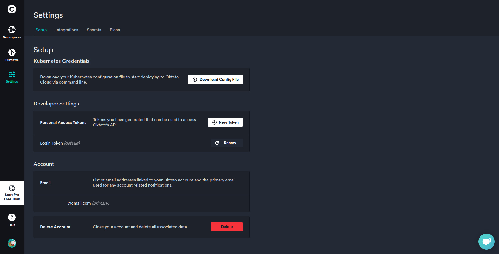
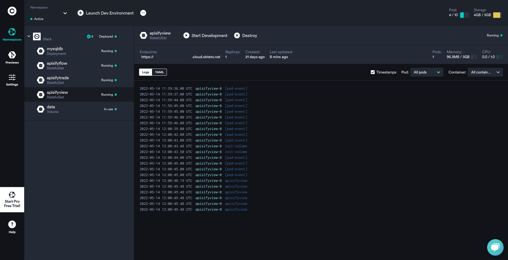
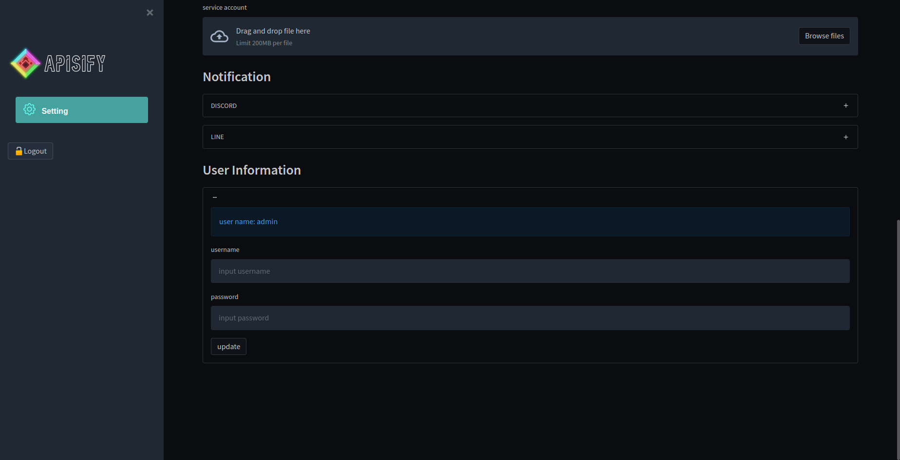

🔌｜⑦Integration
1. Login to Okteto and Create a personal access token by 『”Settings” -> “Developer Settings” -> “New Tokens”. / Create a token by “Settings” -> “Developer Settings” -> “New Tokens”』.
{kind=link}
2. Login to GitHub, go to “Settings” -> “Secrets” -> “Actions” -> “New repository secret” and register as follows.
Name: OKTETO_TOKEN
Value: Value written in token file
{kind=link}
3. Login to Okteto and Click “Launch Dev Environment”.
4. Click your apisify repository from “Only select repositories” and Deploy.
5. Click on the URL without “/view” listed in the apisifyview.
{kind=link}
6. Please login. The default settings are as follows.
Username: admin
Password: admin
{kind=link}
7. Please change your username and password.
{kind=link}
8. Register the apisify license key created in 🗝｜⑤Create license key of apisify.
9. Register your api key and secret key for the exchange.
Note
All configuration values, including these keys, are stored in an encrypted database within the user’s environment and are not stored externally.